系统镜像固件烧录
行空板M10适配了基于debian的linux操作系统，内置了各种功能，因此会不定期进行版本升级，当需要升级行空板最新发布的系统，或者系统出现异常需要恢复系统时，可以参考本文刷入新的固件固件。
1-文件备份
- 重新刷入系统镜像后，板子中的文件包括root目录将被全部清空无法恢复，因此可以先备份一下需要的文件。
- 可以使用samba功能将root目录下的个人文件（隐藏文件不要备份）拷贝到电脑上，待固件刷新完毕后再复制回来。
2-工具准备
UNIHIKER Batch Tool烧录工具
1、需要用到系统镜像烧录工具UNIHIKER Batch Tool：
注：烧录工具升级为批量烧录工具，可一次给10块行空板同时烧录系统镜像，当前仅提供windows版本。
| 下载方式 | windows版 | mac版 | Linux版 |
|---|---|---|---|
| 直接下载（推荐）： | 点击下载 | / | / |
| 腾讯微云网盘下载（推荐）： | 点击下载 | / | / |
| 百度网盘下载: | 点击跳转(提取码：unih) | / | / |
| 阿里云盘下载: | 点击跳转(提取码：v3y2) | / | / |
2、下载需要刷入的系统img镜像文件，下载完解压可得到img格式镜像文件（文件名中包含文件的md5值，请勿修改img文件的文件名）
v0.2.8版本系统文件：仅适用于V1.2以下(不含V1.2)行空板（板子背面右下角有版本号）；
v0.3.1及以上版本系统文件：可适用于所有版本行空板。
最新系统镜像固件下载:
- 最新版本： V0.4.5
- 解压后文件名: unihiker_v0.4.5.md5.f4c31712642c55740bace391375073db.img
| 下载方式 | |
|---|---|
| 飞书云盘（推荐）： | 点击下载 |
| 直接下载（推荐）： | 点击下载 |
| 腾讯微云网盘下载（推荐）： | 点击下载 |
| 百度网盘下载: | 点击跳转(提取码：unih) |
| 阿里云盘下载: | 点击跳转(提取码：v3y2) |
更新日志：
- V0.4.5版系统镜像更新内容：
- 默认Python切换为pyenv中的python3.12.7版本
- 增加内置uv工具并缓存python3.12的pip库- V0.4.2版系统镜像更新内容：
- 内置Python3.12.7中增加内置各种python库，包括模型推理扩展需要的model_mp_io和model_mp_core
- 内置SIoT V2升级解决网页弹窗报错问题- V0.4.1版系统镜像更新内容：
- 新增pyenv工具，并内置Python 3.8.5和3.12.7 [使用说明]
- Home菜单更新
- 封面增加M10 logo
- 增加点击USB IP重置网络功能
- 主菜单右上角增加语言切换快捷图标
- 系统信息页面增加更多参数显示
- 更新apt源文件
- 增加v4l-utils库
- 内置siotV2包更新( 本地web主页切换 )
- unihiker库更新到0.0.28版本
- pinpong库更新板型识别方式
【更多：系统更新日志&历史版本下载→】
3-操作步骤
3.1-加载系统文件
- 右键选择以管理员身份运行系统镜像烧录工具软件UNIHIKERBatchTool.exe。
- 点击加载系统文件，选择系统镜像img文件，文件路径将显示在下方。
注：新版烧录工具增加了文件校验功能，加载系统文件之后将对文件进行md5校验，需要一定时间（根据电脑性能一般在半分钟到5分钟之间），对比读取的文件名后的md5值，如果不一致会提示镜像损坏。
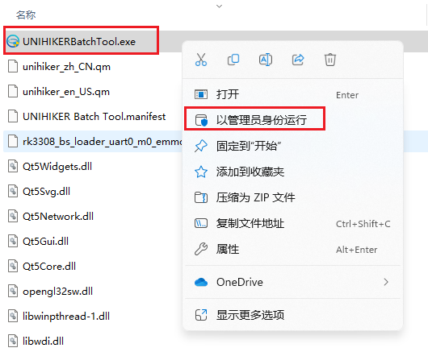
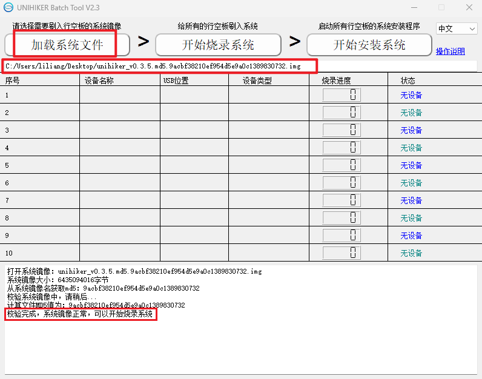
3.2-行空板进入烧录模式
- 拔下USB线让行空板断电（如果板子上插了内存卡需要拔下来，建议保持裸板状态，去掉外设及扩展板等，使用原装USB线），然后按住板子上的Home按键不放，插上USB线连接电脑，此时行空板将进入系统镜像烧录模式（屏幕显示白屏且不会进入系统）。
- 软件上会显示了一个新的设备说明识别正确，可以松开Home按键。如果需要多块板子一起烧录则可以重复这个操作让其他板子进入烧录模式。
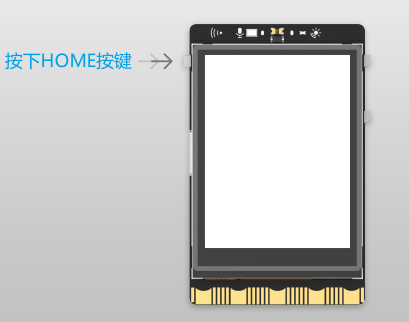
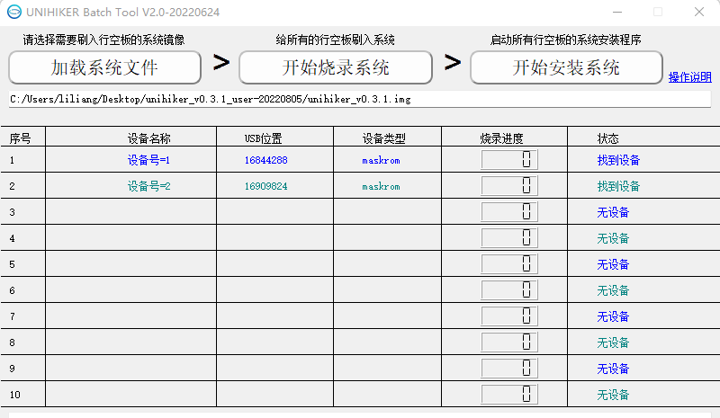
3.3-烧录系统
- 需要烧录的行空板都识别到了之后，点击开始烧录系统，此时将开始烧录固件，如果是第一次连接则会先安装驱动。
- 等待烧录进度到100。
注：烧录过程中查看下方窗口输出的信息，如果卡在某个步骤进度不动超过5分钟，请查看本页面最后的常见问题中的解决办法。
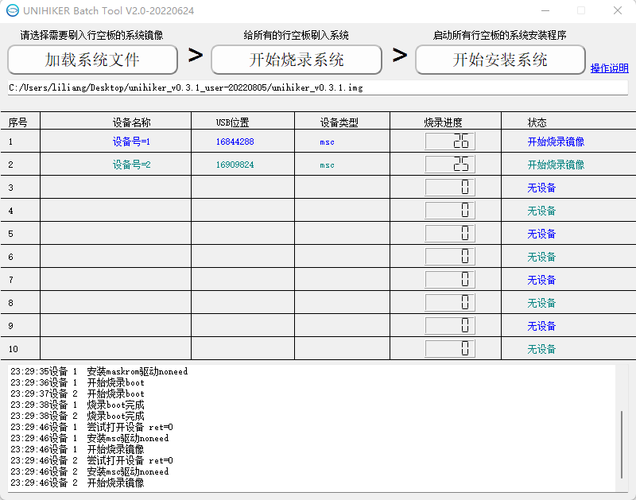
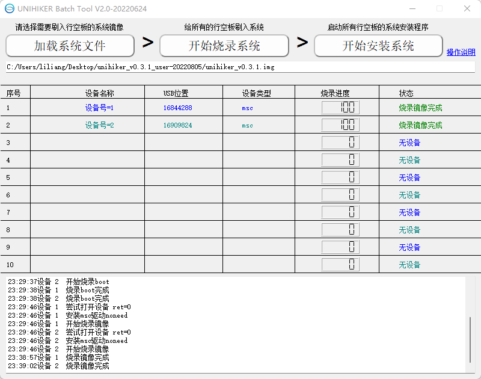
3.4-安装系统
- 当所有行空板烧录进度都到达100%或部分烧录失败后（烧录失败的待其他安装完成之后再重新烧录），点击开始安装系统，烧录软件将控制所有行空板重启并安装系统。
- 行空板会自动安装系统，期间会重启多次，时长约一分钟，最后稳定在显示行空板logo界面或语言选择界面，此过程请勿操作及断电，如果误操作了请重刷系统。
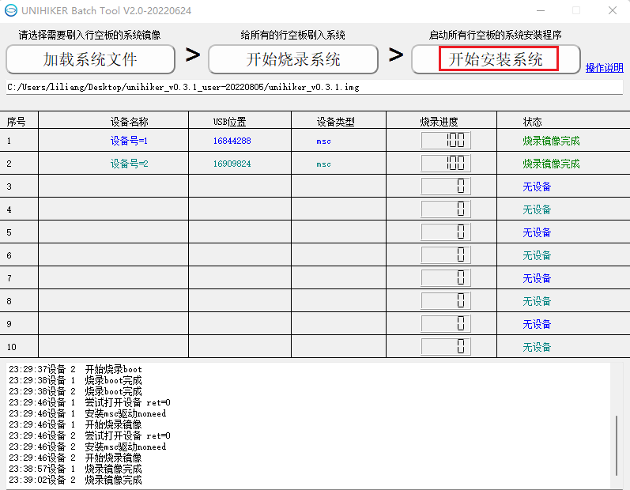
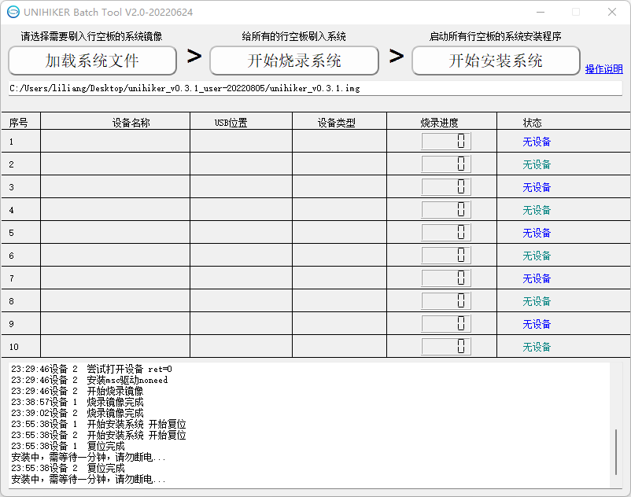
3.5-初始设置
- 语言选择：烧录完成系统启动后显示语言选择界面，按A B按键上下移动光标选择简体中文，按HOME按键确认，行空板会重启，然后显示中文开机logo。
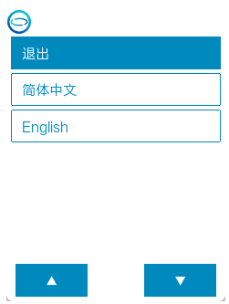
- 触屏校准：系统烧录后，触屏需要重新校准后才可以使用，选择HOME菜单中的校准触摸屏，屏幕会依次出现的5个点触摸点，点击触摸点位置后系统重启即完成校准。
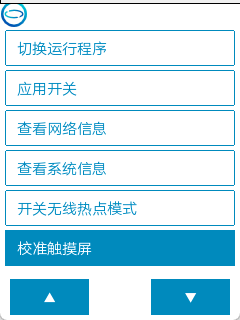
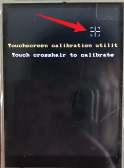
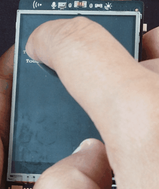
常见问题
| 问题 | 没有显示待烧录的设备怎么办？ |
|---|---|
| 解答 | 首先需要电脑能正确访问行空板，通过usb线连接电脑后，在正常开机时行空板屏幕能显示logo，浏览器访问10.1.2.3能打开行空板的网页菜单。 然后注意烧录系统镜像操作步骤中一定要先板子关机断电，然后按住Home按键再插上USB上电，此时板子才能进入系统镜像烧录模式。 |
| 问题 | 系统烧录完成，进度走到100%后过了1分钟行空板还无法开机怎么办？ |
|---|---|
| 解答 | 可能系统文件下载不完全，可以更换下载方式尝试重新烧录。 |
卡在开始或安装驱动步骤超过5分钟了怎么办？
| 问题 | 卡在开始或安装驱动步骤超过5分钟了怎么办？ |
|---|---|
| 1 | 重启一下烧录软件，以管理员身份运行烧录工具，然后尝试重新烧录 |
| 2 | 如果情况依旧，则将板子断电重新进入烧录模式，然后重启烧录软件进行烧录 |
| 3 | 尝试手动安装驱动后再烧录 |
| 4 | 如果依然无法解决可尝试使用此方法进行烧录： 点击查看 |
点击开始烧录软件闪退怎么办？
| 问题 | 点击开始烧录系统后烧录工具软件闪退怎么办？ |
|---|---|
| 解答 | 尝试手动安装驱动后再烧录 |
如何手动安装驱动？
| 问题 | 如何手动安装驱动？ |
|---|---|
| 1 | 下载驱动包，解压后以管理员身份运行zadig： 点击下载 |
| 2 | 通过拔下和按住home插上行空板时（勾选和取消勾选Options中的List All Device可以刷新列表）来选择Zadig列表中行空板对应的选项，点击Install Driver安装驱动，弹出提示是否安装的时候勾选始终信任...然后点击安装，直到提示successfully为安装成功。 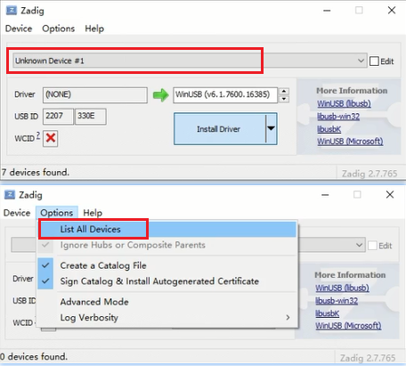 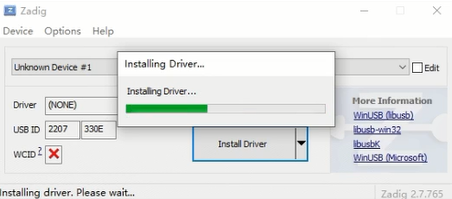 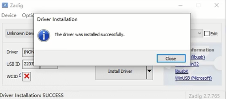 |
| 3 | 驱动安装成功后，拔下行空板usb，然后按住Home键插上USB，此时Zadig中的下拉列表中应该会会变为USB-MSC或Unknown Device，然后点击Replace Driver，直到提示successfully为安装成功。 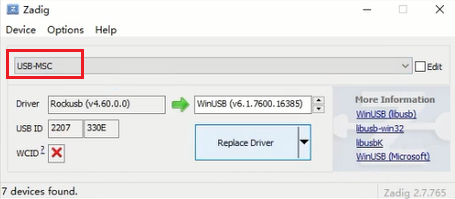 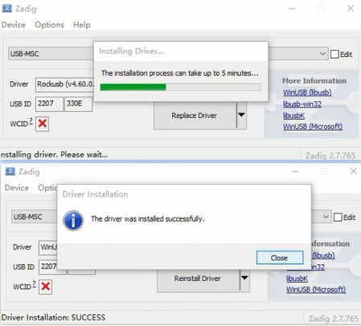 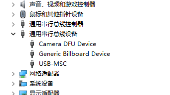 |
| 4 | 上一步完成后，拔下行空板usb，然后按住Home键插上USB，再次以管理员身份启动烧录软件尝试烧录镜像，当有烧录进度则说明正常使用了。 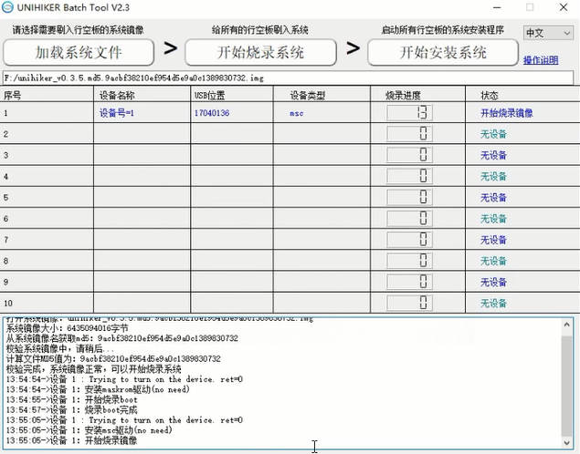 |
| 注： | 请勿使用其他驱动安装软件安装驱动，如果设备管理器中有Rockusb Device这个驱动，则右键卸载。 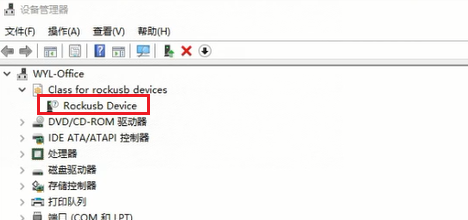 |
| 注2： | 如以上操作依然无法完成，则打开设备管理器，展开“其他设备”“通用串行总线设备”加入技术交流群寻求支持。 |
| 问题 | 烧录系统镜像时加载完文件之后提示校验出错怎么办？ |
|---|---|
| 解答 | 为防止文件下载不完整，新发布的镜像文件名中包含文件的md5值，烧录软件会对文件进行md5计算，将得出来的值与文件名中的值对比，如果发现不一致则说明文件下载过程中可能损坏，请更换其他下载方式重新下载镜像文件。 |
| 解答 | 如果是0.3.5以下版本文件名中不包含md5值，则一定会提示校验出错，此时仍然可以继续点烧录 |
| 问题 | 烧录工具里面的“设备类型”对烧录有影响吗？ |
|---|---|
| 解答 | “设备类型”仅方便识别固件烧录状态，对烧录和使用没有影响。 |
用行空板给行空板烧系统镜像
| 问题 | 使用电脑烧录固件尝试了多种方法还是不行，但是有多块行空板，是否可以用正常的行空板给另外一块行空板烧固件？ |
|---|---|
| 解答 | 行空板本身是一个linux电脑，且具备usb口，因此可以给另外一个行空板烧录固件。详情查看：点击查看 |
如果以上内容无法解决问题，可以加入行空板官方QQ群（1037967676或960854969）进行交流。